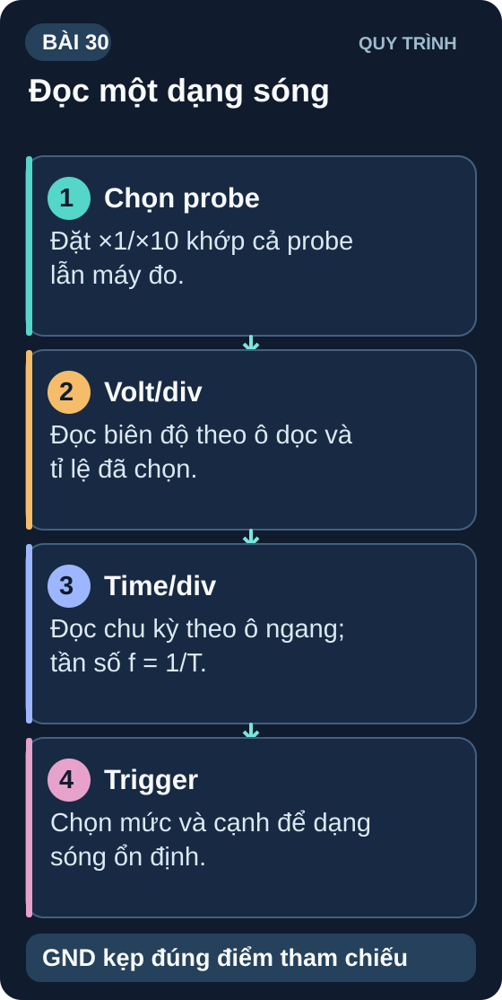
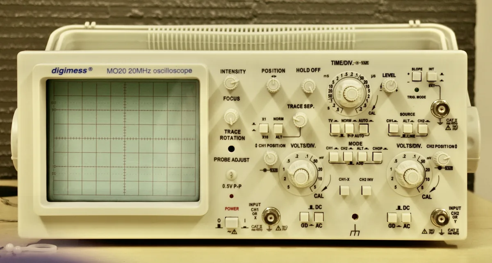
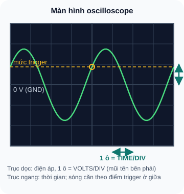

Oscilloscope — Đọc & Đo Dạng Sóng
Thiết bị đo quan trọng nhất của kỹ sư điện tử — nhìn thấy tín hiệu thay đổi theo thời gian mà multimeter không thể.
- Hiểu oscilloscope làm gì mà multimeter không làm được
- Biết các nút điều khiển chính: Volt/div, Time/div, Trigger
- Đọc dạng sóng: Vpp, Vrms, tần số, chu kỳ, phase
- Calibrate probe × 10 — quan trọng để đo chính xác
- Thiết lập trigger đúng — tín hiệu ổn định trên màn hình
- Đo PWM bằng oscilloscope — xác nhận duty cycle và tần số
- Đo ripple nguồn — AC coupling mode
- Nếu không có oscilloscope thực: dùng DSO138 kit (~150k) hoặc Analog Discovery 2


1. Oscilloscope — "Mắt" của kỹ sư điện tử
Multimeter chỉ đọc giá trị trung bình hoặc RMS. Oscilloscope hiển thị điện áp thay đổi theo thời gian — nhìn thấy xung, dạng sóng, nhiễu, spike và transient mà multimeter không thể phát hiện.
| Thông số | Multimeter | Oscilloscope |
|---|---|---|
| Đo DC | ✓ Chính xác cao | ✓ (dùng DC coupling) |
| Đo AC (RMS) | ✓ (giá trị RMS) | ✓ (đo Vpp → tính Vrms) |
| Dạng sóng theo thời gian | ✗ Không thể | ✓ Trực quan |
| Tần số | Giới hạn (một số model) | ✓ Chính xác cao |
| Xung ngắn / Glitch | ✗ Không thể | ✓ (nếu đủ sample rate) |
| Ripple nguồn (mV) | ✗ Khó đọc | ✓ (AC coupling) |
2. Các núm điều khiển quan trọng

Đọc mô tả D30-1
Màn hình lưới 8 ô ngang và 6 ô dọc. Trục dọc là điện áp, mỗi ô bằng giá trị VOLTS/DIV; trục ngang là thời gian, mỗi ô bằng TIME/DIV. Đường đứt ngang là mức trigger; điểm tròn là chỗ sóng cắt mức này khi đi lên và được căn ở giữa màn hình.
2.1 Đọc giá trị từ oscilloscope
2.2 Probe × 10 và calibration
Probe oscilloscope có tụ điều chỉnh bên trong. Nếu không calibrate, dạng sóng vuông sẽ bị méo (overshoot hoặc undershoot ở cạnh). Quy trình: (1) Nối probe vào đầu calibration (CAL) của oscilloscope — thường là 1kHz, 3Vpp square wave; (2) Xem dạng sóng có phẳng không; (3) Dùng tua vít điều chỉnh tụ nhỏ trên probe đến khi dạng sóng vuông hoàn hảo.
3. Thực hành đo PWM và ripple nguồn
Cấu hình Arduino:
analogWrite(9, 128)— 50% duty cycle, ~490Hz.Nối probe CH1 vào pin 9, GND probe vào GND Arduino.
Điều chỉnh Time/div để thấy 2–3 chu kỳ hoàn chỉnh.
Đo: (a) Tần số — xác nhận ~490Hz; (b) Duty cycle = T_on/T × 100% — xác nhận ~50%; (c) Vpp — xác nhận ~5V (hoặc 3,3V với ESP32).
Thay analogWrite thành 64 → đo lại duty cycle. Kỳ vọng ~25%.
Chuyển coupling sang AC (lọc thành phần DC, chỉ xem AC ripple).
Tăng Volt/div nhỏ xuống (10mV/div hoặc 20mV/div).
Đo ripple của nguồn 5V tốt: kỳ vọng <50mV ripple. Đo adapter rẻ: có thể 100–200mV.
Thêm tụ 100µF song song với nguồn → đo lại ripple → xác nhận giảm.
1: Vpp = 3 × 2V = 6V. Vrms(sine) = Vpp/(2√2) = 6/2,828 = 2,12V. T = 4 × 500µs = 2ms. f = 1/2ms = 500Hz.
2: Đây là nguồn điện từ transformer tuyến tính (không có PFC) chỉnh lưu từ điện lưới 60Hz. Cầu chỉnh lưu 4 diode biến 60Hz thành ripple 120Hz (2 lần tần số lưới). Ripple lớn → nguồn chất lượng thấp, tụ lọc nhỏ hoặc hỏng.
3: Dây GND probe dài (ngay cả 5cm) có inductance ký sinh. Ở tần số cao, X_L = 2πfL tăng → tạo vòng lặp khuếch đại nhiễu (ground loop) → waveform bị biến dạng, nhiễu cao tần xuất hiện. Giải pháp: dùng "ground spring" hoặc nối GND probe trực tiếp vào chân GND sát nhất.